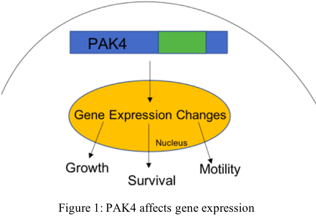
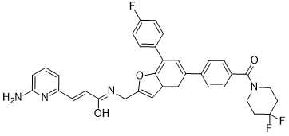
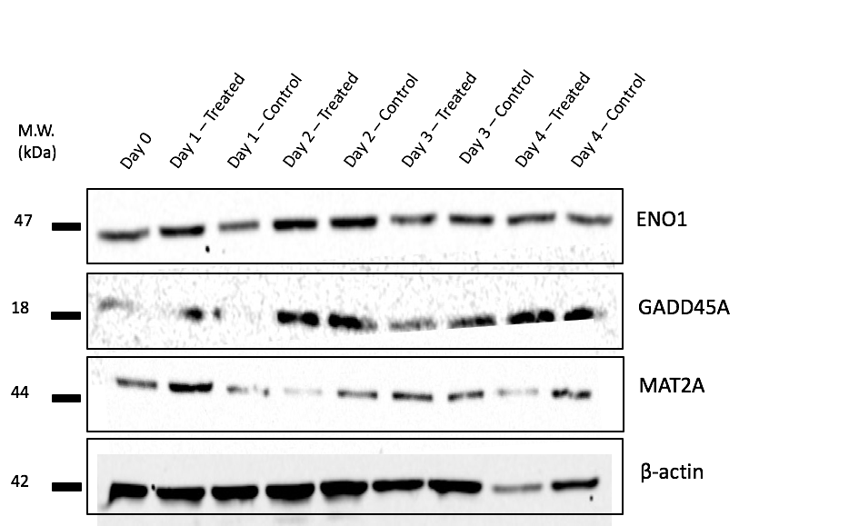
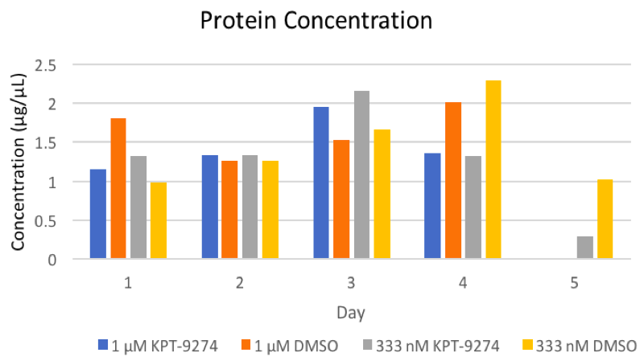
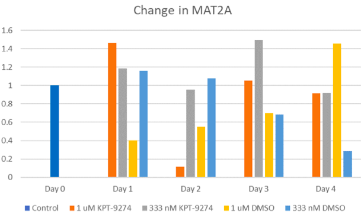
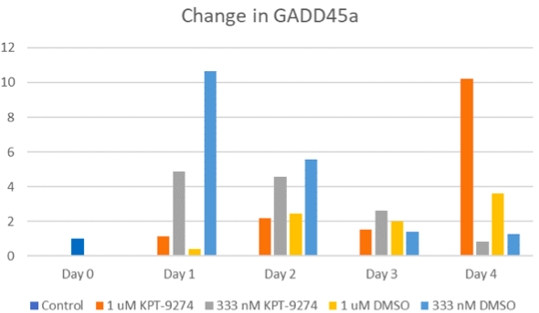
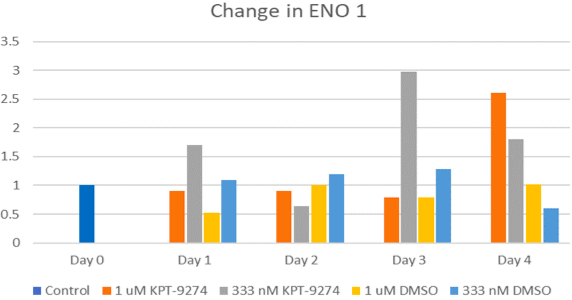

The Effects of KPT-9274 Drug Treatment on Gene Expression in SUM159 Breast Cancer Cells
Writer: Emma Cordover
Date: Fall 2018
Citation: Cordover, E., Minden, A. (2018). The Effects of KPT-9274 Drug Treatment on Gene Expression in SUM159 Breast Cancer Cells Rutgers Research Review, 3(1).
I work in the lab of Dr. Audrey Minden in the Susan L. Cullman Laboratory for Cancer Research, part of the Department of Chemical Biology at the Ernest Mario School of Pharmacy. One area of research that the lab focuses on is the identification of potential biomarkers to improve clinical treatment of triple negative breast cancer (TNBC). TNBC gets its name due to the fact that it is missing the hormone receptors for estrogen, progesterone, and HER2. Among other types of breast cancer, TNBC has a poor prognosis; this is because TNBC is difficult to diagnose and treat as a result of the lack of known druggable targets.
Introduction
PAK4, or p-21 activated kinase 4, is a protein that is critical in many signaling transduction pathways as it mediates cytoskeletal and cell shape alterations along with changes in gene expression. While it is a protein that is expressed in low levels in most tissues, PAK4 overexpression is linked to many human cancers, including TNBC. Therefore, PAK4 has been identified as a biomarker in this type of cancer, signifying that it has the potential to act as an effective druggable target to enhance treatment of TNBC.

My project this summer was centered on studying how KPT-9274, a drug that inhibits PAK4, affects gene expression in the SUM159 human mesenchymal TNBC cell line. KPT-9274, a compound synthesized by Karyopharm Therapeutics, has the ability to bind and reduce the levels of PAK4 as well as inhibit the growth of cancer cells. Previous studies show that the drug is promising for the treatment of TNBC as it triggers cell death in vitro and is effective in the treatment of the disease in mouse models.

Figure 2: Chemical Structure of KPT-9274 (Rane et al., 2017, p. 4)
In order to study the effects of KPT-9274 on gene expression in SUM159 TNBC cells, we analyzed previous Next Generation RNA Sequencing data of SUM159 cells that were treated with the drug and compared it to those that were not. From the data, we were able to identify three different cancer-related genes that were deemed to be affected by the treatment with KPT-9274: GADD45A, ENO1, and MAT2A; GADD45A and ENO1 are both involved in tumor suppression while MAT2A has a role in cancer metastasis. The data indicate that upon treatment with KPT-9274, the amount of RNA in GADD45A and ENO1 increases while that of MAT2A decreases.
Based on the data from the Next Generation RNA Sequencing, we formulated three goals for the project. Our primary objective was to verify the RNA Sequencing results by identifying whether the changes in protein levels of target genes ENO1, GADD45A, and MAT2A are consistent with what was observed for the changes in respective RNA levels. Secondly, we wanted to analyze the mechanism by which KPT-9274 treatment controls the growth of cancer cells. Our final goal was to determine a time course in which KPT-9274 affects protein levels and, therefore, gene expression.
Methodology
As previously mentioned, Next Generation RNA Sequencing identified that the RNA levels of three cancer-related genes – GADD45A, ENO1, and MAT2A – were affected by the treatment of SUM159 cells with KPT-9274. To confirm these results, we aimed to determine whether changes in RNA levels are consistent with changes in protein levels. To do so, SUM159 cells were grown and maintained in Ham’s F-12 media supplemented with fetal bovine serum (FBS), penicillin streptomycin (P/S), HEPES buffer, hydrocortisone, and insulin. The cells were passaged every 2-3 days at a concentration of 1:5.
Once the plates of cells were ready for treatment, we diluted KPT-9274 and dimethyl sulfoxide (DMSO), which serves as the control, in sterile PBS. Five plates of cells were treated with 333 nM KPT-9274, five with 333 nM DMSO, five with 1 µM KPT-9274, five with 1 µM DMSO, and two were kept as Day 0 controls. Each plate of cells was harvested and made into protein lysates on Days 0-5. Bicinchoninic acid (BCA) protein assays were completed for each lysate to determine protein concentration.
After the amount of protein was quantified, we performed Western blots for GADD45A, ENO1, and MAT2A protein levels. 20 µg of cell lysates were resolved by SDS-PAGE and transferred to membranes. The membranes were incubated with primary and secondary antibody. Finally, the membranes were probed using GeneSys software. ImageJ was utilized to quantify the protein density, and the bands were normalized to β-actin.

Figure 3: Western blot analysis of 1 µM KPT-9274 (treated) vs. DMSO (control). β-actin was used to normalize protein levels across samples.
Results
The first conclusion that can be drawn from the data is that the cells treated with KPT-9274 at both the 1 µM and 333 nM doses experienced heightened cell death by Day 4. Consequently, Day 4 shows that the protein levels in the treated cells were much lower than that of the control (Fig. 4). Likewise, by Day 5, the protein levels in the 1 µM KPT-9274 treated cells were too low to be determined by the assay (Fig. 4), meaning that Day 5 lysates could not be used in the Western blots. In the future, we hope to account for low protein quantifications with modifications to the assay.

Figure 4: Results of BCA Protein Assay
In addition, when the cells were treated with 333 nM KPT-9274, ENO1 protein levels increased as expected (Fig. 7). However, MAT2A protein levels and GADD45A protein levels, increased and decreased, respectively, which was different than what was expected (Figs. 5 & 6). Further testing is required to determine if the cells do in fact respond differently to the 333 nM treatment.
However, when treated with 1 µM KPT-9274, GADD45A and ENO1 protein levels increased (Figs. 6 & 7) while MAT2A levels decreased (Fig. 5). This indicates that the protein levels did change in the same manner as predicted by the RNA analysis. Though further experimentation is necessary, these results display that SUM159 cells respond differently to the 1 µM and 333 nM doses of treatment. This is significant as the study indicates that 333 nM is too low of a concentration of KPT-9274 to treat triple negative breast cancer cells.

Figure 5: Change in MAT2A protein levels

Figure 6: Change in GADD45A protein levels

Figure 7: Change in ENO1 protein levels
Discussion
In this study, we have found that the gene expression of GADD45A and ENO1 are up regulated in response to KPT-9274 while MAT2A is down regulated. This is consistent with the functions of the genes as GADD45A and ENO1 are involved with inhibiting cancer cell growth and MAT2A promotes tumor metastasis.
In the future, we plan on confirming that the decrease in MAT2A is essential to the efficacy of KPT-9274 via re-introducing the gene by use of transfection. Similarly, we intend to validate that the increase of ENO1 and GADD45A is essential to the role of KPT-9274 by silencing the genes by means of small interfering RNA (siRNA). We would also like to use the Next Generation RNA Sequencing data to identify and further investigate other potential genes and signaling pathways that are affected by KPT-9274. Lastly, we plan on studying how the treatment of SUM159 cells with KPT-9274 affects cell death.
Overall, the methodology and results of this research project are significant as they can be used to study other cancer-related genes that are affected by KPT-9274 and thus a decrease in PAK4. The identification of PAK4 as a molecular biomarker for TNBC can be useful in the treatment of other types of cancers that overexpress PAK4.
References
- Rane CK, Minden A. P21 activated kinase signaling in cancer. Semin Cancer Biol. 2018 Jan 9. pii: S1044-579X(17)30249-3. doi: 10.1016/j.semcancer.2018.01.006.\
- Rane CK, Patel M, Cai L, Senapedis W, Baloglu E, Minden A. Decrypting the PAK4 transcriptome profile in mammary tumor forming cells using Next Generation Sequencing. Genomics. 2017 Oct 18. pii: S0888-7543(17)30128-3. doi: 10.1016/j.ygeno.2017.10.004.
- Rane C, Senapedis W, Baloglu E, Landesman Y, Crochiere M, Das-Gupta S, Minden A. A novel orally bioavailable compound KPT-9274 inhibits PAK4, and blocks triple negative breast cancer tumor growth. Sci Rep. 2017 Feb 15;7:42555. doi: 10.1038/srep42555.
- Rane CK, Minden A. P21 activated kinases: structure, regulation, and functions. Small GTPases. 2014;5. pii: e28003. doi: 10.4161/sgtp.28003.